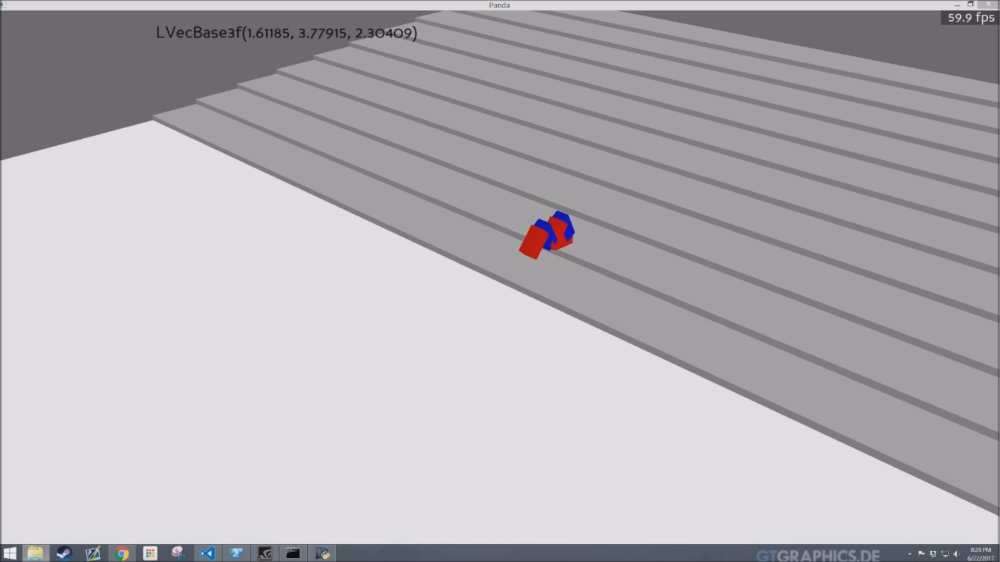

Evolution of Artificial Creatures in Stair Climbing
Luna Li, Kevin Nguyen, Karthik Vemulapalli, Kiran Sivakumar

Abstract
There have previously been works in creating artificial models that evolve using information from the environment in order to become more fit. In this paper, we present one such experiment in which a snake-like model learns to climb stairs over multiple generations using the information of how successful models in the previous generation were. The paper details the specifications of our simulation, the implementation using a Python library called Panda3D, and an analysis of the model's evolution.
Source Code Report  Images of the agent during simulations from Generation 1 through Generation 6 (left to right). Generation 1: Wriggles on the ground in the same position it started. Generation 2: Stops rotating its body and instead focuses on bending, constricting, and relaxing. Generation 3: Moves forward to the bottom of the staircase after learning how to kick with its heal. Generation 4: Makes it up the first step. Generation 5: Makes it up two steps. Generation 6: Makes it up three steps.